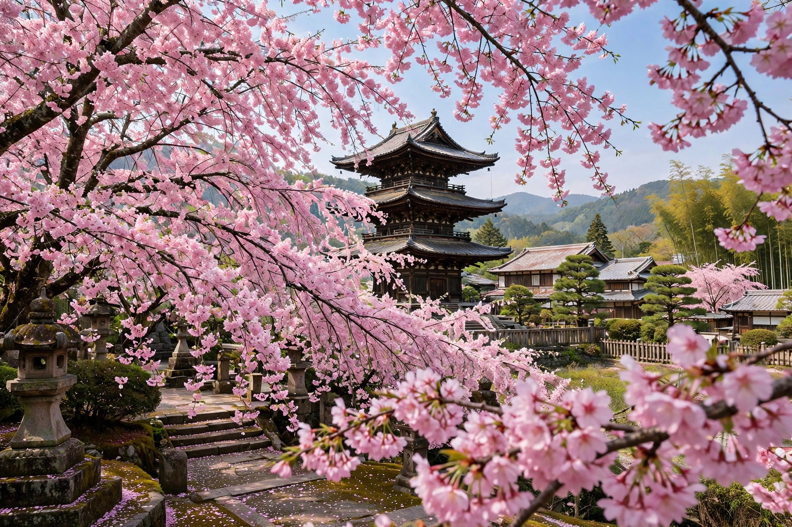

A cherry blossom, also known as a Japanese cherry or sakura, is a flower of trees in the genus Prunus, particularly the Japanese cherry Prunus serrulata, in the family Rosaceae.
In Japan the centuries-old practice of hanami — picnicking under blooming sakura — dates to the Nara and Heian periods. The blossoms, beautiful and short-lived, are a metaphor for the transient nature of life in Japanese aesthetics (mono no aware).
The most popular cultivar is Somei Yoshino, with pale pink, almost white flowers. Others include yaezakura with double blossoms and shidarezakura, the weeping cherry.
Japan gifted cherry trees to Washington, D.C. in 1912; the National Cherry Blossom Festival there draws over a million visitors. Unlike sweet cherry trees grown for fruit, ornamental cherries are bred for flowers.